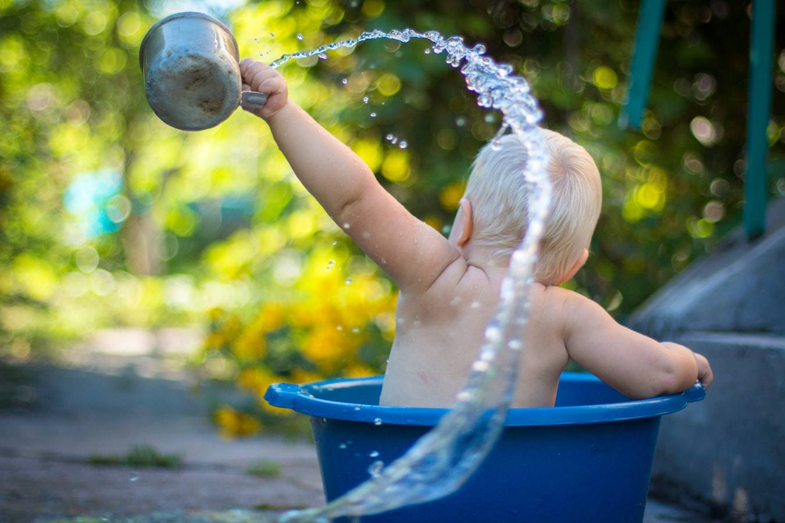

| 親が育てば子が育つ！: -新米ママへ贈る３つの心得- | |
| みかみみお | |
| みかみみお (2019) | |
著作権に関するご注意
タイトル
親が育てば子が育つ！
- 新米ママへ贈る３つの心得 -
発行日
2019
年
7
月
3
1
日
著 者 みかみみお
親が育てば子が育つ！
- 新米ママへ贈る３つの心得 -
(
以下、本書と表記する。
)
の著作権は、みかみみおにあります。
・本書のすべての内容は、日本の著作権法、及び国際条約によって保護されています。
・著者が事前に書面を持って許可した場合を除き、本書の一部、または全部を、あらゆるデータ蓄積手段
(
印刷物、電子ファイル、テープレコーダー等
)
により、複製、流用、転機、転売することを固く禁じます。
・著作権の侵害につきましては、著作権法第
119
条などの罰則がありますのでご注意ください。
第
119
条 次の各号のいずれかに該当する者は、
5
年以下の懲役若しくは
500
万円以下の罰金に処し、またはこれを併科する。
・著作者人格権、著作権、出版権、実演家人格権又は著作隣接権を侵害した者
(
第
30
条第
1
項
(
第
102
条第
1
項において準用する場合を含む。
)
に定める私的使用の目的をもって自ら著作物若しくは実演等の複製を行なった者、第
113
条第
3
項の規定によ り著作者人格権、著作権、実演家人格権若しくは著作隣接権
(
同条第
4
項の規定により著作隣接権とみなされる権利を含む。第
120
条の
2
台
3
号において同じ。
)
を侵害する行為とみなされる行為を行った 者、または第
113
条第
5
項の規定により著作権もしくは著作隣接権を侵害する行為とみなされる行為を行ったものを除く。
)
・営利を目的として、第
30
条第
1
項第
1
号に規定する自動複製機器を著作権、出版権または著作隣接権の侵害になる著作物または実演等の複製に使用させた者。
・配布、使用に関しての要望は、
anmut911@gmail.com
までご連絡ください。
・本書の使用に関する同意 本同意書は、本書を購入した個人または法人
(
以下、甲と称す
)
とみかみみお
(
以下、乙と称す
)
との間で、本書の使用に関する一切の関係に適用します。 本書を甲が受け取り、パッケージを開封した場合には、本同意書に記載された全ての事項に同意したものとみなします。
第
1
条
(
本同意書の目的
)
甲は、本同意書に基づき、乙が著作権を有する本書に含まれる情報
(
ノウハウ、テクニック等
)
を使用することができます。
第
2
条
(
知的財産侵害の禁止
)
甲は、本書に関する全ての知的財産権が乙に帰属することを承諾し、その権利を侵害しないことを約束します。甲は、この書面による事前許可が得られない場合は、以下の行為を行ってはいけません。特に本書を他者に貸与、譲渡、販売、公開す ることを固く禁じます。
甲は、自らの事業、所属する会社及び関連組織
(
販売店、代理店等
)
において飲み、本書に関する情報を使用できるものとします。
(1)
本書の複製、転写、転載、改ざん、部分使用
(2)
本書の内容の一部または全部に関する出版、講演、広報活動
(3)
本書の内容に関して取材を受ける行為
(4)
本書の内容に関して不特定多数に告知する行為
(5)
その他、全各号に該当する恐れのある行為、またはこれに類する行為
第
3
条
(
損害賠償
)
甲が本同意書の第
2
条に違反した場合、甲は乙に対して、その違約金として、違反件数と販売価格を乗じたものの
10
倍の金額を払うものとします。 また、甲が本同意書に反した行為、または不正、違法な行為によって乙に損害を与えた場合は、乙は甲に対し損害賠償の請求を行うことができるものとします。
第
4
条
(
責任の範囲
)
乙は、甲に対し、本書の情報の使用による発生した一切の損害について責任を負わないものとし、損害賠償の義務もないものとします。 第
5
条
(
同意書の変更
)
乙は、本同意書の内容をいつでも変更、追加、削除できるものとし、文書、電子メールによるお知らせなど乙が適当と考える方法により甲に通知します。 本同意書の内容の変更がなされたことの通知を甲が受け取った後に、甲が本書の使用を継続する場合は、本同意書の変更を承諾したものとみなします。
第
6
条
(
裁判管轄
)
本同意書に関して訴訟の必要が生じた場合には、乙の所在地を管轄する地方裁判所を第一審の管轄裁判所とします。
© 2019 -parenting coach2020-
本書を手にとってくださりありがとうございます！
突然ですが、あなたは自分の子どもに、どんな大人になってほしいですか？
子育ての目標って、家庭によって実にさまざまですよね。
一人として同じ子どもがいないように、ママの性格や価値観、育った家庭や環境、パパの影響力、そして何より子どもの性格や状態によってその目標もひとつとして同じものはありません。
それに加え、いま、世の中には育児に関する情報が溢れていて、子育てに悩んだときはすぐに知りたいことを探すことができます。
ブログや
SNS
や育児本で見つけるそれらの知識。
こんなときはこうすると良い！
こんな時にこうしたら NG ！
褒めちゃダメ！
叱っちゃダメ！
、、、
あまりにも情報が多すぎて、一体何を信じればいいの！？って、逆にその情報量に溺れてしまうこともしばしば。
参考までに、今まで
300
人超のママさんたちに伺った子育ての目標！
主にこういったものがありました。
・ 人に優しくできる人になってほしい
・ 礼儀正しい子に育ってほしい
・ 稼げるようになってほしい
・ 自己肯定感を持った大人になってほしい
・ 自分で人生を切り開けるようになってほしい
・ いい大学に行っていい会社に入ってほしい
などなど。
あなたは、どんな子育てを目標にしていますか？
親の望みというのはキリがありません。
「どうせなら健康に育ってほしい」
「どうせ健康になれるのなら、優しくてみんなから好かれる人になってほしい」
「どうせ健康で人格者になれるのなら、自立してほしい」
「どうせ健康で人格者で自立できるのなら、たっぷり親孝行してほしい」
「どうせなら将来的には二世帯住宅でね！」
なんて。
でも、これらの前提には何があるでしょうか？
それは、
「子どもが生きている」 ということ。
子どもが生きているからこそ、こんなに「どうせなら」って夢も見られるし、あなたはその子の「ママ」でいられるんです。
つまり子育てとは
「子どもが生きている」という前提ありきだということ。
これができて初めて、今見てきたような色んな願望を持つことができるんです。
この子のために、あれもしなきゃ！これもしなきゃ！
って、あまりにも真面目であまりにも頑張り屋さんで、あまりにも苦しい思いをして子育てをしているママさんの、なんと多いことか。
この子のため、パパのため、おじいちゃんおばあちゃんのため、立派な大人に育てなきゃ！
将来この子が苦労しないで自分で自分の人生を切り開き、高い自己肯定感を持ち、誰にでも優しく自立して明るく社会性のある大人に育てなきゃ！！
って、ママは色んなことを頑張りますよね。
でも ...
この子がお腹の中にいる時からこんなに頑張って張り切って。
生まれてからは一生続くやもしれない育児に追われ。
なんであのママさんは涼しい顔で子育てしてるの？
Instagram
では完成度の高すぎる離乳食やお弁当に圧倒され。
なんで同じ時期に幼児教室に入ったあの子はもうできてるの？
もういっそ早く大きくなってしまえばいいのに。
何でも一人でできるようになればいいのに。
毎日が辛い。思うようにいかない。
なんのためにこんなことしてるのかわからない！！！
そんな風に思ったときは、子どもの寝顔を見て立ち戻ってください。
この子がいるからママなんだ。
この子が生きてるだけで子育ては成功なんだ、って。
そう、あなたがママでいるだけで、子どもが生きているだけで、子育ては成功です。
そんな風に悩めるあなたは、正真正銘、最高のお母さんなんです。
あなたはもう十分頑張ってる。
まだまだ続く子育てなんだから、もっと肩の力を抜いていいんだよ。
そう考えたら、
子育てに疲れたとき、
日々忙しく子どもとの時間を過ごせなかったり、
イライラ叱ってばかりだったり、、、
そんな毎日が、ちょっとだけラクになるかも！
改めまして、こんにちは。みかみみおと申します。
わたしには
2012
年生まれの小学生の女の子がいます。
かくいうわたしも、子どもの寝顔を見て覚悟を決めたこと、たくさんあるんですよね。
がむしゃらに頑張って、もがいてもがいて、それでもダメで立ち止まったこと。
もうダメだ、もう諦めよう！と思ったときも、子どもの寝顔を見て諦めずにすんだこと。
本当に、親は子どもに育てられているんですよね。
恥ずかしながら、わたしはずっと母との親子関係がずさんだったので
...
自分に子どもが生まれてからは、わたしのような思いはさせてならない！と、毎日が勉強でした。
そんなときに出会ったのが、コーチングや
NLP
、発達心理学でした。
いま、わたしはママのための子育てコーチとして、たくさんのママのお悩みを聴いています。
誰しも願うのは、我が子の幸せ。
我が子が自立した、幸せな人生を歩めるように。
この度、セミナーご参加者、講座受講生、親子撮影参加者の方よりいただいた、
300
件超に及ぶ子育てのお悩みを元に。
実際に娘を育てていく中で、一縷の望みと先行きの見えない不安に押しつぶされそうな新米ママへ。
これだけは贈りたい！贈らねば！と思った３つの心得を、ギュギュッと凝縮して書籍にまとめました。
子育ての最終目標は「子どもの自立」です。
本書が我が子の自立を願う全てのママにとって、少しでも参考になりましたなら幸いです。
時は令和元年。
華々しい、新しい時代の幕開けです！
ところが世の中を覆うのは、「不安」という目には見えないけれども、確実にわたしたちを蝕んでいる分厚い膜。
AI
や多様性
(
ダイバーシティ
)
、人生
100
年時代など、時代のスピードの速さについていけないママが、大きな不安を抱えています。
「
10
～
20
年後には、日本の労働人口の
49
％の仕事が人工知能やロボットで代替可能になる」
（野村総合研究所（
NRI
）未来創発センター）
なんてことが、実際に起こり得るのです。
（オックスフォード大学マイケル A. オズボーン准教授、カール・ベネディクト・フレイ博士による共同研究より）
これからさらに
10
年
20
年後、我が子はどんな仕事に就くのか？
一体何を目指して子育てをしたらいいのか？
正直誰も想像することなんてできません。
ただ１つ、これからの時代を生き抜くために言えるのは、
「人から言われたことだけを忠実にこなしても、何の価値も持たなくなる」
ということ。
つまり誰にもわからない未来だからこそ、正解を求めるのではなく、自分の価値観力を高め
0
から作り出す力が必要となってきたということです。
そのために親ができること。
それは、
1.
親の土台を整える
2.
子どもの自立を支える
3.
子どもの才能を開花させる
の 3 つなんです。
なぜこの３つがが必要なのか！？次の項から順番に見ていきましょう！
【 ママの自己マネジメント能力 】
子どもが生まれると、わたしたちの生活は文字通り一変します。
特に女性は人生のライフステージの変化とともに、母であり、妻であり、娘であり、 嫁であり、ビジネスパーソンだったり、、、
多くの役割を持って生きていきます。
時として家庭に重点を置き、
時として仕事に重点を置き、、、
バランス良くやっていこうと思っても、コントロールしていくのは至難の業。
困ったときは、 1 人で抱え込まずに誰かに・どこかに相談してください。
身近な人が心強い人もいれば、身近過ぎると相談しにくいことも。
ありがたいことに、世の中にはあらゆる子育て関連サービスがあります。
ぜひ賢くお得に利用されてくださいね！
人間は、誰しも自分自身が人生の主人公です。
育ってきた環境や、過去の出来事から影響は受けますが、それをどう受け止めてどのように行動や態度を決めていくかは自分次第。
ハッピーな家庭を築きたいのなら、そのように自分の人生を選択していくことができるんです。
でも、子育てをしていると
イラっとしたり、
自信を失って泣きそうになったり、
鬱っぽくなったり。
色んなことがありますよね。
いただいたご質問・ご相談には、このようなものがありました。
・ 子どもが大声を出す
・ 泣きわめく
・ 気が弱くてすぐメソメソする
・ お友達を叩く
・ 嫌だと言って聞かない
・ おもちゃを片付けない
・ ご飯をダラダラ食べる
・ 働いていて子どもとの時間が取れない
・ 小さいうちから保育園に預けていて可哀想に思う
などなど。
私からの提案は、
イラっとして、 「感情的にならない」
泣きそうになって、 「感情的にならない」
鬱っぽくなって、 「感情的にならない」 ということ。
イラっとしたり泣きそうになったりは止めることは出来ません。
でも、そのあと「感情的にならない」ということを選択するだけで、自分の気持ちを整えることができるのです。
そうは言っても、それが簡単にできてるなら悩まないよ！という声が聞こえてきそうですね ^^;
実は、これら感情をコントロールすることや、ママが自分の人生の主人公となるために必要なスキル・能力があるんです。
それが 【 自己マネジメント能力 】
自分をどう律するか、自分で自分を管理し、コントロールする力を言います。
例えば「明日早起きするために夜はテレビを見るのをやめて寝よう」
例えば「産後太り ... 夏までにあと 3 キロ痩せたいから食後のアイスはしばらく控えよう」という具合ですね！
自己マネジメント能力の主な項目はこちら。
1. 感情コントロール
2. 時間管理
3. 体調管理
4. 目的意識を持つこと
5. 意欲・モチベーション維持
の 5 つです。
特に自己管理するために必須な大きなポイントは、 「目標や目的意識、モチベーション」を保つ事。
いやいやいや、それが大事なのはなんとなくわかるけど、自分でコントロールしていくなんて無理でしょ〜！！！
って思いますよね。
果たして子育て中のママに、そんなこと可能なんでしょうか？？？
たいていモチベーションが低下しているときというのは、目標に意識を向けることができなくなってしまっている状況です。
人間、モチベーション・エネルギーが下がる要因は 「ストレス」 なんです。
そしてストレスにも色んな要因（不規則な生活、仕事・人間関係・お金・人生に対するマイナスの心理状態など）がありますが、とりわけママのストレスの要因は 「消化不良」 ！
思い通りにできない、思い通りに終わらせられない、思い通りのレベルまで到達しない、などなど。
未完了のままのものが積み重なってストレスを蓄積していきます。
そこで、ママだからこその自己管理能力を保つ重要なポイント！２つご紹介します。
1.
時間管理
ママって常に、同時に家事育児をこなすことが求められますよね。
自分でも同時にいくつもこなすことが当たり前になり、またそれが正しく効率的だと思いがち。
でも実はこのマルチタスク、パフォーマンスのクォリティを下げているんです！
優先順位をつけることができない複数の要求にさらされると、脳は圧倒され、うまく機能しなくなります＝マルチタスクを試みると情報処理能力を低下させるストレスホルモン（コルチゾール）が過剰分泌されるのです。
するとストレスが生じ、脳の神経細胞が萎縮し、
・ 問題を解決したり、
・ 感情を調整したり、
・ 逆境に負けずに立ちあがったり、
・ 衝動をコントロールしたりする能力
が低下するんですね。
目の前で子どもが笑ってる、助けを求めてる、泣き叫んでる、、、
その声を振り切れるママが、どれだけいるでしょうか？
でも、効率を考えて
・ 泣き声に屈せずご飯を作りながらメール返信をする。
・ 子どもの声に耳を貸さず、目先の家事や仕事を優先する。
これ、心満たされますか？
あぁ、わたしって幸せ！って思えますか？
わたしはそう思えませんでした。
4 歳まで子どもを預けず家で仕事をしていたのですが、ちっとも心満たされなかった。
なぜなら全てが中途半端だったから。
子どもは愛しいはずなのに、なんかおかしいな？
なんでこんなに満たされないんだろう？
と思って改めて日々の生活を振り返ってみると、この 「未完了」 の多さに気付いたんです。

『家事＋ ○○ 』『育児＋ ○○ 』とマルチタスク化してしまうママの日常。
これだとストレスホルモン（コルチゾール）は過剰に分泌され、かたや幸せホルモン（セロトニン）は分泌されずにどんどん幸福度が下がり、子育てツラい＞＜と感じてしまうことになるんですね。
つまりなんでもこなしたいママが、時間を自らコントロールして "happy な子育てライフ " を送るためには、
① なるべく同時進行にしない。
② 小さな未完了を完了していく
ということが必須になるんです。
集中できず、自分が自分じゃなくなる気がしたり、頭がおかしくなりそうになったら、
とにかく孤独の時間を作る！
5 分でも 10 分でも構いません。
子どもの安全を確保し、
5
分だけ、
10
分だけでも
1
人にさせてもらいましょう。
家事が１つ２つできていなくても、誰も死にません！
そして、 ③ 「いまここ」を感じられることをする。
つまり、
【 超集中力で無意識になれる時間 】を作るんです。
おすすめは ...
・ トイレに行く
・ 瞑想する
・ シャワーを浴びる
・ 読書する
・ 自然を感じる
・ 運動する
・ 音楽を聴く、、、などなど
そうすることでスッキリ爽快！
また育児のクォリティも上がり、ママの自己肯定感も満たされます。
※ 戻ってきたら必ずお子さんを抱きしめてあげてくださいね ^^

2. 体調管理
体調管理に重点を置いているママさんは少ないかもしれません。
でも、 子育てこそ体調第一！！
毎日だるい、ストレスをうまく発散できない、などといったことも、体調管理に含まれています。
自分を律しコントロールすることで、健康な状態を維持し、子育てにおいても高いパフォーマンスを発揮できるのです。
特に小さいお子さんを育てているママにとって、朝は「地獄のひと時」なんて声も。
それに加え、そもそも 朝起きにくい というママへ。
やる気はあるのに身体がだるい、疲れてすぐ横になりたくなる ...... という場合は低血圧が原因かもしれません。
ほかにも、めまい・頭痛・肩こり・耳鳴り・不眠・胃もたれ・吐き気・発汗・動悸（どうき）・不整脈などの症状も、低血圧が原因という診断があります。
本書では、病院以外で行える「低血圧」の改善方法として、「食事」と「運動」をお勧めします。
低血圧の原因と考えられるのは ＜冷えと筋肉量＞
改善策は 基礎代謝を上げて基礎体温を上げること です。
夜は眠る 1 時間前までに、 39 度から 41 度で自分が気持ちいいと思える湯温で 10 分浸かってください。
ちゃんと眠れて朝が心地よいか？というのを自分で１週間試してみてください。
普段の食生活では特にタンパク質（肉類、魚類、納豆などの大豆食品）をしっかり取ること。
また、不足しがちなミネラルを補うために、野菜や海草類を積極的に取ることも大切です。
低血圧の場合、人ごみや暑い場所にいると、疲れや頭痛などの症状が悪化しがち。
できるだけ人ごみを避ける、ママ友との立ち話や、支援センター・児童館などでの人付き合いはほどほどにする、暑い日の外出はしない、外出する場合は早めに休憩をとる、などの方法で、普段から予防していきましょう。
低血圧の症状や自分の体調をしっかり理解し、上手に付き合って対処していけたらいいですね ^^
いかがでしたでしょうか？
① なるべく同時進行にしない
② 小さな未完了を完了していく
③
「いまここ」を感じられることをする
④
夜は眠る
1
時間前までに、
39
度から
41
度で自分が気持ちいいと思える湯温で
10
分浸かる
１つ１つ見てみると、意外にできそうじゃないですか？
前述したように、自己管理能力を高めるためには自分の心理状態や目的意識、感情のコントロールが欠かせません。
といっても、いきなり大きく出るのは至難の技。小さなことから訓練していくといいでしょう！
ということで、本書でお勧めしたい方法はこちら。
● 達成可能な小さい目標を設定する、です。
いきなり「
3
歳で英語をペラペラにさせる」などの大きい目標を立てても、どうすればできるのかもわからず挫折してしまいます。
大きい目標を設定するのなら、まずはそれを小さく分け、必ず達成できるレベルにしてから実践していくことです。
また、目標を立てるときには、「その目標を達成したら何が得られるか」を意識してみると良いでしょう！
「 3 歳で英語ペラペラ」 を達成してどうしたいか？
ということですね。
旅行をするでも、海外移住するでも構いません。
目標
（
3
歳で英語ペラペラ）を達成するのが目的ではなく、達成してどうしたいか（旅行をする、海外移住するなど）を考えてみましょう。
こうすることで、目標に対してモチベーションを高いレベルで維持できるようになるのです。
そして、そのためにはどんな小さなことでも、
「できたこと」
にフォーカスしていきましょう。
昨日より罪悪感を持たずに家事を中断して休憩することができた！とか。
こないだより早くママ友との立ち話を切り上げられた！とか。
これってすごいことです。着実に
自己管理する
、という目標に近づいているわけですから。
できたことに意識を向けることで目標達成感が生まれ、気持ちも満たされます。
月に行くのもまずは「月に行く」ということを目標にすることから。
何事も結果を急ぐ方がとっても多いですけど、いきなり人類は月に到達したわけではないですよね。
目標をたて、日々小さな進歩をして行くことで結果に繋がるのです。
ぜひ自己マネジメント能力を身につけて、ママ自身の人生の主人公となっていきましょう！
親たるもの、子どもの自立を願うもの。
そのために親ができることは 3 つあります。
それが
1. 社会性を身につける
2. 勇気づけをする
3. 我が子を信じる、というもの。
◆
人間として生きていく力を育む
◆
こんなデータがあります。
2000
年にノーベル経済学賞を受賞したジェームズ・ヘックマンの
「ペリー就学前プロジェクト」
これはアフリカ系アメリカ人の低所得層の幼児
123
名（当初
IQ
が
75
から
85
）に対して
1
グループは就学前にある特定の幼児教育
1
グループは就学前の教育なし
という数十年の追跡調査をしたものです。
その結果、、、
8
歳くらいの時点では学力や
IQ
など、テストで測ることのできる「認知能力」は、 受けた子と受けなかった子でどちらもだいたい同じくらいでした。
ところが、、、
40
歳の時点で比較してみると、 就学前に特定の教育を受けたグループのほうが定職に就いている率や持ち家率、 自家用車保有率などが高く、 経済的に安定、社会的にも成功していた
のです。
この差はプリスクールに通って 認知的な能力を伸ばしたからではなく、 非認知能力を身につけたこと が大きな要因だとわかっています。
つまりIQ や学力に長期的な向上をもたらしたわけではなく、それ以外の「非認知能力」を伸ばすことに効果があった＝幼少期に非認知的な能力を身につけておくことが、大人になってからの幸せや経済的な安定につながるという結果なのです。
この 「非認知能力」 という言葉、耳にしたことはあるでしょうか？
今、世界中の幼児教育者の間で注目されている、IQ テストや学力テストで測れない能力を指し、
前述した文部科学省学習指導要領の「生きる力」にもその内容が組み込まれているのです。
では具体的に「非認知能力」とは何か？
ということですが、非認知能力とは
1.やり抜く力
2.主体性
3.創造力
4.自制心
5.自己肯定感
6.自信
7.回復力
8. 社会性
9.共感力
の
9
つ。
つまり！子どもが自立するために必要不可欠な
1. 社会性を身につける
2. 勇気づけをする
3. 我が子を信じる
という子育てが、非認知能力を育むといえるのです。
こちらでは、早速そのうちの
1. 社会性を身につける についてみていきます。
社会性とは、
・ 他者との間で有意義な絆を築けるようになること。
・ 人の気持ちを知り、うまく人づきあいができるようになること。
・ そして、困った状況にも適応できるスキルを身に付けること
です。
これ、 出来ていない大人もた～くさんいますよね ^^;
もちろんわたしも、毎日が勉強です！
というかわたし、とっても苦手分野でして。ずっと他者との関わり方については苦労してきました。
でも、だからこそ学ぼう！という意識を持つことができたんです。
◆ 学校生活で成功するスキル ◆
米ヴァンダービルト大学が
20
年に渡り調査した、
「子どもたちが学校生活で成功を収めるために必要な社会性スキル」
のトップ
10
がこちら。
(8000
人の小学校教員対象
)
・ 人の話を聴く
・ 段階を踏む
・ 規則に従う
・ 気が散るものを無視する
・ 助けを求める
・ 順番に話す
・ 人と仲良くする
・ 人に怒らない
・ 自分の行動に責任を持つ
・ 人のためになることをする
この結果は、自己主張をしながらも他者を認め尊重する子どもを育てることの重要性を示しています。
◆ しつけを受けた人は年収が高い ◆
また、こんなデータもあります。
神戸大学 西村和雄教授の行った研究によりますと、
以下の 4 つの基本的なモラル
1. ウソをついてはいけない
2. 他人に親切にする
3. ルールを守る
4. 勉強をする
を、しつけの一環として親から教わった人は、それら全てを教わらなかった人と比較すると 【平均年収が 86 万円高い】 という結果が出ています。
つまり日本でも「幼児の頃にきちんとしつけられると、大人になってから社会的にも成功し、年収が高くなる」という調査結果があるんです。
いかがでしょうか ？
社会性がいかに必要なスキルかわかっていただけたかと思います。
では実際、
どうしたら社会性が身に付くのか？といったら、
ポイントは 子どもに自発的な行動を促す ことです。
子どもが可愛いあまりに、つい過保護的になってしまいがちですが、社会性を身に付けさせる点でいうとこれはかなりの悪影響。
親と子どもの交流
が子どもの学習と発達に重要な役割を果たします。
ぜひ！ママは子どもが自発的に行動できるように支援しましょう。
そのためのポイントはこちら。
・
ママが主導権を握らず子どもの遊びに参加する
一緒に遊ぶときは、ママが主導権を握るのではなく子どもに主導権を握らせましょう！どんな風に遊ぶのか、お互いどんな役割を持つのか、子どもの発想力と想像力を促します。
・
褒めるのではなく承認の言葉を使う
「承認」とは、お子さんの存在そのものを認めること。
例えば「こないだより早く走れたね」「大きな声でご挨拶できたね」だけでなく、「たくさん遊べたね」「よく眠れたね」「いっぱい汗掻いたね」など、
ママは自分のことを見てくれている！
という自己認識が、お子さんの自己肯定感を上げていきます。
評価するような言葉ではなく、具体的な内容について承認の言葉を使っていきましょう。
・
子供に問題解決させる
子供は
試行錯誤
することで問題解決能力を高めます。ママはなるべく手を出さずに見守りましょう。
・
話
をさせる
親だから、と上からの目線ではなく子どもと同じ目線に立って、子どもが自分の気持ちを伝えられるまで辛抱強く待ちましょう！
・
フィードバックする
フィードバックを習慣的にすることで、常に「否定されてる」と身構える子にならず、より良くなるために貪欲に成長していきます。
ここでは 「フィードバック」 についてもう少し詳しく見ていきたいと思います。
子どもって、とってもポジティブ。
3 ～ 6 歳の子どもは、ある人物が一回好ましい態度を取っただけでその人は「親切な人」だと判断します。
それに対し「意地悪な人」だという評価は悪い行動を数回取らないと下さないんです。
（ノースカロライナ大学調べ）
他にも色んな事例で悪い評価は信じず、さまざまな事象を肯定的・ポジティブに受け取る傾向があることがわかっています。
だから子どもっていつも楽しそうなんですね！
ただ、小学校に入る頃にはそんな楽観主義的・毎日 happy ♪ な生活に陰りが見えてきます。
遅刻をすれば怒られる、自分より算数が出来たり
漢字が上手い子もいる、先生に気に入られなかったり
イジメられる子もいる。
今までずっと、ポジティブにフォーカスしてきた子どもたち。
身内以外から厳しく言われることもなかったし不条理に否定され、社会の理不尽さを味わったこともない。
それがいきなりの世界の変化に ...
大いに戸惑い、挫折感を味わいますよね。
では、「厳しい評価も受け入れられる強い子」になるにはどうしたらいいのかというと、、、
「フィードバックを常にすべし！」
なんです。
《 フィードバック 》とは、 達成したい目標に対していまどこの位置、方向性にいるのかを伝える作業 です。
その根底には、より良くなりたい、より良くなって欲しい、という気持ちが込められています。
ただ「あなたはダメだから！」と否定することでもなく、ただ「すごいねー上手だねー」と褒めることでもありません。
では
《 フィードバックされて育った子 》と
《 フィードバックされないで育った子 》
では、どんな特徴があるでしょうか？
フィードバックとは達成したい目標に対してすることなので「達成したい目標」がある子のママさんはすでにしているはず。
《 フィードバックされて育った子 》
もっと速く走りたい子に
「（速く走るためのフォームと比べて）腕が下がってるよ」と言うのはフィードバックです。
もっと速く走りたければ、「よし！もっと腕を上げよう！」と素直に受け止めて実行に移しますよね。
特別目標がなかったとしても元気に挨拶が出来たら、「今の挨拶、とっても元気で聞いていて気持ち良かったよ！」と言うのもフィードバックです。
こんなこと言われたら、嬉しくなってより元気に挨拶出来ちゃいますよね。
1. 余計な脚色をせずに事実を事実として子どもに伝える。
2. そして、伝えられた本人も前向きに、より良くなるために行動に移す。
これが正しいフィードバックです。
一方で、
《 フィードバックをされないで育った子 》
こちらは目標達成に対しての客観的事実を伝えてもらっても素直に受け取ることが出来ません。
（ ※ まさにわたしがそうでした）
「この人はなんでこんなことを言うのだろう？」
「なんでわたしのことを否定するんだろう？」
「きっとわたしのことが嫌いなんだ」
と、事実の指摘が「否定された」「嫌われた」に変換されてしまうのです。
こうなると、常に「否定されてる」と身構える子になってしまい、友達との人間関係や、将来職場での人間関係にも卑屈になり支障が出てきます。
そんなことが起きないためにも！
ぜひ日頃から愛あるフィードバックを心掛けていきましょう。
ポイントは
① 根底により良くなりたい、より良くなって欲しい、という気持ちを持っている。
② 事実のみを伝える。
ということが大切です。
さらにいただいたご質問・ご相談には、このようなものがありました。
・ 人前での叱り方がわからない
・ マンションやご近所さんとの挨拶は子どももするべき ？
・ 外食時のマナー
・ お葬式も出席させるべき ？
・ 公園で知らない子どもにいじわるされたとき親はどうするべき ？
・ 子連れでのマナー
・ お出かけ中のマナー
などなど、です。
少しだけ解説していきます。
Q. マンションやご近所さんとの挨拶は子どももするべき？
A.
最近では、マンション内での挨拶は鬱陶しい。という意見もありますが、必ずお子さんと一緒に挨拶しましょう！
人間の基本、社会性の基本は「挨拶」です。
おはよう、こんにちは、こんばんは、さようなら、 ありがとう、ごめんなさい、、、
しっかり言える子は誰からも愛されますし、応援される人になります。
また、防犯の面でもご近所さんと顔見知りになっておくことは得策です。
そして大切なのは 「ほら、挨拶しなさい！」 ではなくママが挨拶している姿を見せること。
子が挨拶できないのは単純に、ママが挨拶している姿を見ていないからです。
Q. 外食時のマナーは？
A.
飲食店には、それぞれコンセプトがあります。 オーナーが想いをもって運営しているお店で、まずは子連れがオッケーなのか事前に確認しましょう。
子連れでもいいじゃない！こっちはお客よ！というのは社会性
0
ですよね。
それぞれが想いをもってやっているお店で、子連れ
NG
であれば、どうしても行きたい時はお子さんをどこかに預けて大人だけで行きましょう。
また、環境の悪い居酒屋やアルコールを置いているお店で、煙モクモク、酔っ払いに囲まれて ... というのは育児放棄と言われても反論できません。
子どもの身体に悪影響を与えない行動をしましょう。
離乳食の持ち込みや、食べこぼし予防のシートや新聞紙なども、お店の人やほかのお
客さんが不快に思わないような気配りが必要です。
せっかくの外食、ご家族も周りの人も、みんなハッピーな気持ちで過ごせますように ^^
Q.
お葬式も出席させるべき？
A.
身内の葬儀には、ぜひ出席させましょう！例えそのときに意味がわからなくても、故人の最期を見せお別れに来た人たちを見て、ちゃんとお子さん自身お別れが言える機会というのは大変貴重です。
Q.
公園で知らない子どもにいじわるされたとき
A.
まずは我が子に寄り添って声掛けしましょう。「どうしたの？何があったの？」「そう、
○○
ちゃん悲しかったんだね、嫌だったんだね」など、子どもの気持ちを受け止めます。
そして相手のパパママにひと声かけましょう！
このとき、相手のパパママに叱ってもらうのではなく、お子さん自身に相手の子どもに声をかけさせることがポイントです。
準備が整ったら、「
○○
ちゃんどうしたい？どうしたらいいと思う？」と、子どもに考えさせます。時間はかかるかもしれませんが、ママが質問
→
子ども自身が考え答える、という習慣が自立を育みます。
いつもママに指示命令されている子どもは普段から考えることをしていないので、なかなか答えが見つからないかもしれません。
そんなときは「ママはこう思うけど
○○
ちゃんはどう？」と答えを促します。
もしお友達に言えない、言いたくない、なんてときはママと一緒に。
しっかり自分の気持ちを意識して、それを伝える、ということを練習していきましょう。
ママの役目は子どもを信じ、認めること。
大好きなママがいつでも見守ってくれている、という安心感が自己肯定感を高め、自立を促すのです。
ご覧いただいたように、子どもの社会性、子どもの自立、子どものマナーは親次第です。
親が出来ていないものを、小さい子どもが出来るわけありませんよね。
誰でも、最初に社会性を学ぶのは育ってきた家庭です。親の行動は、言葉よりも大切なのです。
｢子ど
もが親の言うことを聞かなくても、心配いりません。むしろ、常に親の行動が見られていることを心配した方がいいでしょう｣
（『人生に必要な知恵はすべて幼稚園の砂場で学んだ』ロバート・フルガム）
子育ては親育て。
親が育てば子は育ちます。
ぜひ自分磨きの機会だと思い、 お子さんと一緒に成長していきましょうね ^^
親たるもの、我が子が自分の才能を活かし、それを強みとして幸せになることを願うもの。そのために現代の親ができることは
3
つ！
●考える力
●感じる力
●表現する力
を磨く手助けをすることです。
なぜこの
3
つかというと、前述のように大学入試や就職活動の採用基準に、文部科学省の定めた「人間力」が推奨されているからです。
人間力の高め方として
社会を構成し運営するとともに、自立した一人の人間として力強く生きていくための総合的な力を総合的にバランスよく高めること と定義されています。
いつまで経っても学歴至上主義の我が国日本で、なぜこのような方針が出されたか？というと、背景にはこんな現代社会の問題点があります。
・
あと
10
～
20
年で､
49
％の職業が機械に 代替される可能性がある。
（野村総合研究所・オックスフォード大学共同研究）
・
2011
年にアメリカの小学校に入学した子どもたちの
65
％は､ 今は存在していない職業に就くと予想される
（ニューヨーク市立大学大学院センター教授キャシー・デビットソン）
・
約
1/3
の企業が 外国人留学生を採用。 特に
1,000
人以上の企業では
3
社に
2
社とその割合は増加する
（ディスコキャリアサーチ「外国人留学生／高度外国人材の採用に関する企業調査」
2017
年
11-12
月）
また、
2019
年には文部科学省でも学習指導要領が見直され、
・ 学校教育が新学習指導要領へ
・
大学入試が多面的・総合的評価の共通テストへ
と、変わってきます。
つまり知識や技能を習得するだけではなく､ それをもとに｢自分で考え､表現し､判断し､ 実際の社会で役立てる｣ことが求められる時代となったからなのです。
そのために
● 考える力
● 感じる力
● 表現する力
を磨くオススメの有効な手段の 1 つ！
それが 「読書」なんですね。
読書が有効な理由はたくさんありますが、まずは読書は全ての勉強の基礎となります。
文章が読めなければ、問題も解けません！
現に
「算数」では、読書量が「多」い子どもは偏差値が「＋ 3.5 」である一方で、「無」しの子どもは「 -1.3 」と、 4.8 ポイントの差が開いており、学力変化に一定の影響を与えていることがわかっています。
（ 2017-2018 進研ゼミ「実力診断テスト」）
また、読解力を
5
段階に分けた調査では
・ 1 ～ 2 レベルの人は、 3 ～ 5 レベルの人に比べ、無職である割合が 2 倍
・レベル 1 の 3/4 が、無職か低賃金の職業
・レベル 1 で成人向け教育・訓練を受けている割合はレベル 5 の 1/4 以下
（ OECD 国際成人力調査： PIAAC ）
つまり、差があるだけでなく、その差はどんどん拡大していく、という調査結果が出ているのです。
本は、新しい世界を開いてくれます。
本は、知識欲を満たしてくれます。
本は、たくさんの刺激を与えてくれます。
それなら映画でもいいでしょ ？
漫画でもいいでしょ ？
ゲームでもいいでしょ ？
と思うかもしれません。
しかし、そうではないのです。
なぜなら文字から想像をし、自分の頭の中に 1 つの世界を創り上げ、色んなことを受容出来るからです。
映画も漫画もゲームも、もちろん素晴らしい部分はたくさんあります。
でもあまりにも設定・世界観が製作者側に用意されており、また、刺激も強すぎます。
そうすると自分自身の
考える力 感じる力 表現する力
は、どんどん衰えていってしまうんですね。
以上のように、 子どもが読書好きになることで、読解力や想像力、論理的思考や感受性が向上するなど、多くのメリットが期待でき ます。
それに加えて、近年では「数学の基礎知識」と「 IT スキルの高さ」に影響を及ぼすこともわかってきています。
ぜひ幼少期から本を身近に感じ、センスを磨いていきましょう！
＜おすすめの読書法＞
(1) 読み聞かせの習慣をつくる
一日中、色んな刺激を受けて交感神経優位になっていたお子さんの身体。
眠る前にママの声を聴きながら、リラックスして安心して ...
想像力を膨らませて自分の世界観を感じること。
最高の時間です。
大好きなママと、大好きな絵本と、心温まる幸せな時間。
そんなひと時に聴こえてくる優しい声。
とっても楽しくて幸せなひとときに思い浮かべたお話の世界は、大人になっても残っています。
絵本の読み聞かせはぜひ
0
歳児から始めましょう！
(2) どんな本も、親が制限しない
言葉が汚いから
...
暴力的な表現があるから ...
我が子には知らないで欲しい世界の話だから ...
と、親が子どもの読みたがる本を制限しないでください。
まずは自ら本を手に取る！ことから始めましょう。
また、逆に、読みたくもない本を渡されて「これを読みなさい」と言われてもどんどん本が嫌いになっていくばかりです。
どうしても制限していきたのなら、何冊か用意した中から選ばせましょう。
(3)
本の内容を話させる
効率の良い学習方法
No.1
は、
インプットしたらアウトプット！
すること。
お子さんが絵本や本を読んだら、どんな内容だったのか教えてもらいましょう。
人に伝えようとするときは、「わかりやすく伝えよう」「わかってもらおう」と考えて伝えます。そうすることで、「得た情報」を「整理する能力」が磨かれます。
人に伝えることを続けていくと、「どうやって伝えるか」を考えるようになります。
どうやって伝えるかを考えるようになると、「どうやって物事をとらえるか」ということが重要だと気付くようになります。

つまりアウトプットすることは、情報をインプットする質を上げることに繋がっているのですね。
人類史上最も情報が溢れている現代社会において物事を多視点で見る能力、情報を整理する能力、自分なりに表現する能力が磨かれていきます。
こちらもお話ができるようになった
2
歳くらいからぜひ始めてみてくださいね。
我が子の感受性の豊かさに、ママはビックリすること間違いなしです
^^
(4) 一緒にそれぞれの読書時間をつくる
子どもだけでなく、親も日々学んでいる姿を見せること。
近年では、全く読書をしない大人も増えています。
本の代わりに手に持っているのはスマホ。
スマホを見ながら「本を読みなさい」と言っても、全く説得力はありません。
人生は日々勉強です。
学ぶことで人生の幸福度も上がっていきます。
以上のように、子どもの才能を開花させるためには
・ 考える力
・ 感じる力
・ 表現する力
を磨く手助けをする。
その一番効果的な方法は「読書」だ、というお話でした。
ここまでご覧いただき、ありがとうございました。
子育てに自信がない！
子どもに幸せになってほしい！
でもどこから始めればいいのかわからない！
そんな、我が子を愛する全てのママへ。
先行き不安の現代に、子どもと安心してハッピーに暮らしていくための 3 つの心得を、一冊の書籍としてまとめました。
日々子育てや生活に追われ、理想と現実の狭間で揺れることもあるかもしれない。
自分だけ頑張って、誰にも感謝されなくて、自分の存在意義を見失うこともあるかもしれない。
でも、子どもが大きくなったときに、 ママの子どもで良かったな、ママに信じてもらえてたから、今がこんなにハッピーなんだな
♡
って、ふと思ってもらえるように。
そんな親子関係を築くためには、今日からのあなたの行動にかかっています。
あなたとお子さんの、これからの人生をとびきりの笑顔で美しく輝いたものにするために！！
そのためには 、 ママが今の自分を認め、人生を楽しむこと。
色々と書いてきましたが、正直それだけなんです。
時には辛く大変なこと、おかしくなって叫び出したくなっちゃいそうなこともある子育てだけど、、、
何よりママ自身の幸せのために、ぜひ一緒に肩の力を抜いて、楽しんで子育てしていきましょう
♡
まだまだお伝えしたいこと、たくさんあります！
ご覧になってのご感想やご相談、誰にも言えない悩みや愚痴、いつでもお待ちしております。
下記をクリックしてメッセージを送ってくださいね ^^
あなたとあなたのお子さんの成長を、一緒に見守っていけましたら嬉しいです。
メッセージフォーム → https://forms.gle/D9y3U2jp5VEoQAHcA
LINE → http://nav.cx/cDLFFju （ ID 検索は「 @131krwah 」）
タイトル
親が育てば子が育つ！
- 新米ママへ贈る３つの心得 -
発行日
2019
年
7
月
3
1
日
著 者 みかみみお